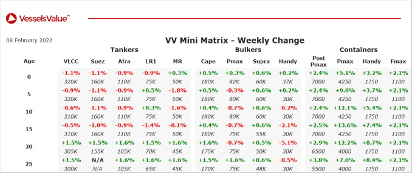

inWeekly Vessel Valuations Report09/02/2022

Tanker:Tanker values have remained stable.
VLCC Athenian Success (317,400 DWT, Jan 2010, Hyundai Heavy Ind) sold to Sinokor for USD 42.50 mil, VV value USD 38.91 mil – Prompt Delivery.
Aframax Gundala (107,000 DWT, Jan 2003, Imabari) sold for USD 11.70 mil, VV value USD 11.36 mil – DD Passed.
Bulker:Older Handy Bulker values have softened.
Panamax Silver Star (79,200 DWT, Jun 2011, COSCO Dalian) sold to Midde Eastern buyers for USD 18.00 mil, VV value USD 19.56 mil – SS/DD Passed, BWTS Fitted.
Panamax Nord Fortune (76,600 DWT, May 2008, Imabari) sold to Newport SA for USD 16.35 mil, VV value USD 18.28 mil – SS/DD Passed.
Panamax Elva (73,900 DWT, Oct 2001, Namura) sold for USD 11.20 mil, VV value USD 11.89 mil – SS/DD Passed, BWTS Fitted.
Supramax Magda (58,000 DWT, Jul 2010, Yangzhou Dayang Shipbuilding) sold to Costmare for USD 16.50 mil, VV value USD 16.75 mil.
Handy Bulker Marine Princess (35,500 DWT, Nov 2012, COSCO Guangdong) sold to Indian buyers for USD 16.40 mil, VV value USD 17.17 mil – At Auction.
Handy Bulker Super Valentina (33,400 DWT, Feb 2013, Shin Kurushima Onishi) sold for USD 18.80 mil, VV Value USD 18.71 mil.
Container:Container values have firmed.
Sub Panamax Cape Marin (2,758 TEU, Jun 2012, Guangzhou Wenchong) sold for USD 52.50 mil, VV value USD 45.95 mil – SS/DD Due.
Sub Panamax Cape Martin (2,700 TEU, Jan 2007, Wadan Yards MTW) – SS/DD Due and Handy Containers Cape Nabil and Cape Nemo (1,740 TEU, Sep – Nov 2010, Guangzhou Wenchong) sold in an en bloc deal to Moller Maersk AS for USD 114.50 mil, VV value USD 100.51 mil.
